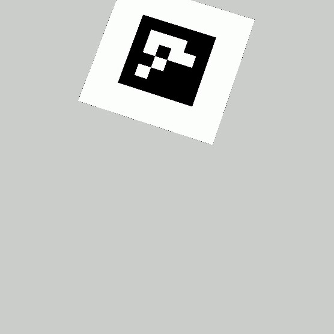
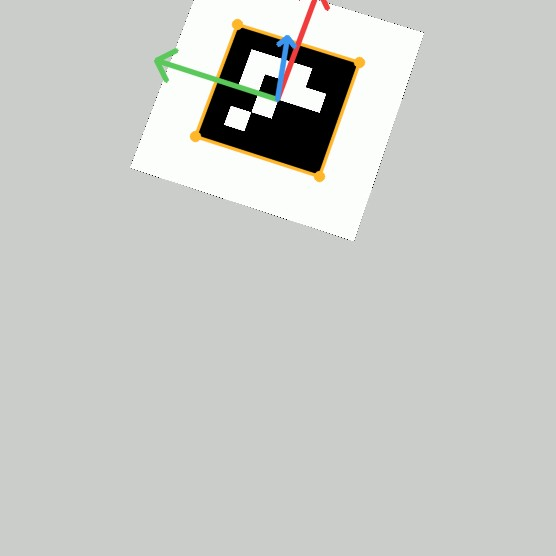
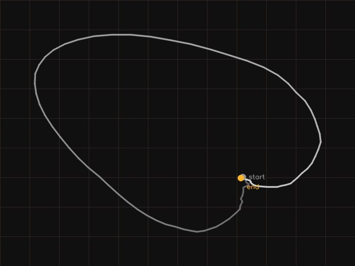
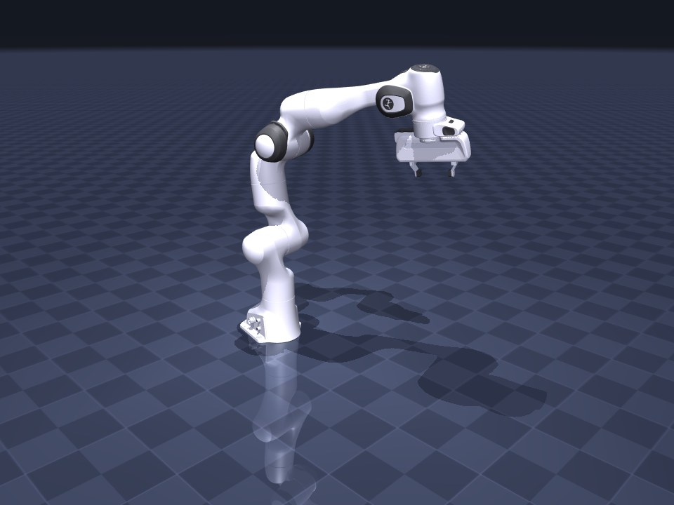

vid2traj reads ordinary RGB video, estimates the wrist pose in every frame, and retargets it onto a specific robot without leaving its joint, speed, or collision limits. The output is a LeRobot dataset you can train on.
This clip is synthetic. It is a rendered ArUco marker following a known reach-and-return path, so every output frame can be scored against ground truth. No real hand video has been measured yet: the bare-hand frontend (MediaPipe) is implemented but unvalidated, and the numbers below say nothing about it.
Imitation learning needs hours of demonstrations. Today that usually means a teleoperation rig: an operator, a leader arm, a follower arm, and the robot itself, before you have any data.
Video of people doing tasks with their hands is easy to record by comparison. A video is not a trajectory, though. It has no joint angles, no metric scale, no idea what a particular arm can reach, and no guarantee that any of it is safe to execute.
vid2traj covers that gap end to end. It estimates the wrist pose per frame, lifts it into a world frame, smooths it, solves inverse kinematics against a real robot model, and refuses to emit any pose the robot could not safely hold. The result loads directly into the LeRobot training stack.
Six stages, each consuming the previous one's output. Every image below came out of a real run on the synthetic clip.
Frames go in one at a time. No depth channel is assumed, and nothing beyond the camera intrinsics needs calibrating.

Two interchangeable frontends sit behind one interface. An ArUco marker gives a metric, deterministic reading and produced every number on this page. MediaPipe Hands tracks bare hands on a CPU in real time, but it has not been validated on real footage yet. A frame with no confident detection returns nothing rather than a guess.

The camera extrinsic puts every pose in one fixed frame. Short dropouts are interpolated. Long ones are flagged and left unfilled, because a smooth line through a gap nobody observed would be invented data.

A fixed wrist-to-gripper offset from the robot's config turns the tracked pose into a target pose. Damped least-squares IK on MuJoCo's analytic Jacobian then solves for joint angles. Redundant arms get a null-space pull toward the home pose, so the elbow stays put instead of flipping between solutions.

Every candidate pose is clamped into the joint limits, rate-limited so no velocity or acceleration limit breaks, and checked for self-collision in MuJoCo. If a pose still fails, the previous valid one is held and the frame is recorded as held.
Order matters here. Rate-limiting before the collision check lets the arm refuse a bad pose without an acceleration spike as it stops.
Parquet plus MP4 in the v3.0 layout, with the metadata the real loader expects. Two runs on the same input produce byte-identical files.
meta/info.json
meta/tasks.parquet
meta/episodes/chunk-000/…
data/chunk-000/file-000.parquet
videos/observation.images.side/…The core regression generates a known joint trajectory, renders it to video, runs the whole pipeline on that render, and compares the recovered end-effector pose with the trajectory it started from. Nothing in between is mocked.
| Claim | Check | Result |
|---|---|---|
| Round-trip accuracy | synthetic ground truth through the full pipeline | 1.7 mm RMSE, 4.74 mm worst frame |
| Joint limits and self-collision | every emitted frame re-checked in MuJoCo | every frame passes |
| Velocity and acceleration | finite differences against the robot's datasheet limits | no frame exceeds |
| LeRobot compatibility | loaded and iterated with the real lerobot package (optional test) | loads and iterates |
| Determinism | two runs, SHA-256 of the Parquet and MP4 | byte-identical |
| Degradation | occlusion, subject leaving frame, two people, blank video | no crash, no unsafe frame |
There are two kinds of failure, marked differently. A pose the safety pass rejects (self-collision that survives rate limiting) falls back to the last pose it trusts; the review page marks it amber and the safety report counts it as held. A frame perception never saw is marked unobserved instead: short gaps are interpolated, and long ones hold the last solved pose. Either way the robot pauses rather than lunges.
Nothing in the retargeting, safety, or export layers branches on which robot it drives. The model path, joints, limits, home pose, wrist offset, gripper mapping, and IK gains all live in YAML.
| Robot | Arm joints | Task space |
|---|---|---|
| Franka Panda | 7 plus a parallel gripper | full 6-DOF, one redundant joint |
| SO-101 | 5 plus a jaw | position, with orientation as a soft preference |
SO-101 is the harder case on purpose. Five joints cannot reach an arbitrary 6-DOF pose, so its config marks orientation as a soft preference and convergence is judged on position alone. That is a flag in the file, not a branch in the code.
Needs Python 3.10 or newer and ffmpeg on your PATH. The synthetic clip comes with its ground truth, so you can reproduce the numbers above.
# install pip install -e . # render a synthetic clip with known ground truth vid2traj synth --out demo/ # convert it into a LeRobot dataset for the Franka Panda vid2traj convert demo/clip.mp4 --embodiment franka_panda \ --camera demo/camera.json --out demo/dataset # build the side-by-side review page vid2traj viz demo/dataset --video demo/clip.mp4 --out review.html